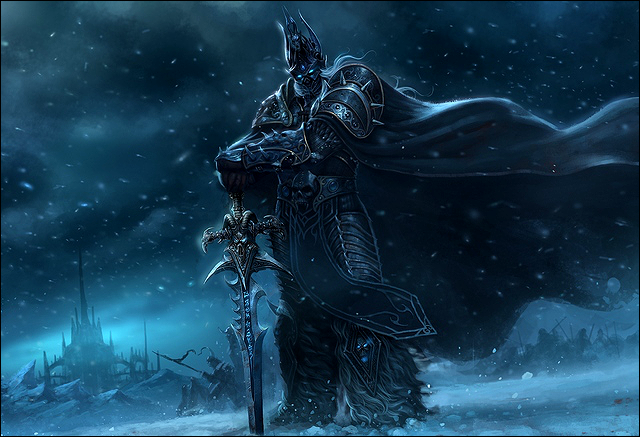

Артас Менетил (англ. Arthas Menethil) – коронованный принц Лордерона и паладин из ордена Рыцарей Серебряной Длани. Он был сыном короля Теренаса Менетила II и наследником трона. Наставником Артаса был Утер Светоносный. Несмотря на многообещающее начало своего жизненного пути, Артас стал одним из самых могущественных и злобных созданий, которых когда-либо знал Азерот. Получив Ледяную Скорбь, он стал одним из рыцарей смерти Плети и уничтожил Лордерон, Кель'Талас и Даларан с помощью войска нежити. Артас достиг Ледяного Трона в Нордсколе и слился с Королём-личом. После нескольких лет правления Плетью на северном материке и войны против Альянса и Орды Артас был побеждён в битве Тирионом Фордрингом и его чемпионами Света.
Биография
Ранние годы
Артас родился в королевской семье Теренаса и Лианны Менетил за четыре года до начала Первой войны. Молодому принцу пришлось расти в тяжелые годы, когда земли Азерота были охвачены войной, Альянс распадался на части, а на горизонте маячили темные облака.
В детстве он был лучшим другом Вариана Ринна, принца утраченного Штормграда, и наблюдал, как растет его будущий конь Непобедимый. Став подростком, Артас обучался воинским искусствам у Мурадина Бронзоборода, брата короля Магни, и погружался в истины Света под руководством Утера Светоносного. Некоторое время спустя Теренас решил выдать свою дочь Калию за лорда Давала Престора, пытаясь решить политические проблемы. Калия была растеряна и, когда Артас успокаивал её, пожелала ему выбрать жену по любви, а не из-за политики.
Принц дал присягу ордену Рыцарей Серебряной Длани, когда ему стало девятнадцать лет. Церемония состоялась в Соборе Света, находившемся в заново отстроенном Штормграде, и именно тогда Артас получил священный молот, названным Отмщением Света. Находясь в Штормграде, он также посетил Вариана Ринна, вернувшегося на престол, и его новорожденногом сына Андуина, обхватившего палец Артаса. Однажды принц посетил крепость Дарнхольд, где увидел известного орка-гладиатора Тралла. Он остался в крепости на ночь, и Эделас Блэкмур, местный правитель, отправил в нему в комнату Тарету Фокстон, чтобы угодить ему. Но между ними случился лишь разговор, и Артас заметил, что Тарета напомнила ему Джайну Праудмур, к которой он привязался. Позже он катался верхом на Непобедимом, и тот получил смертельную рану при столкновении. У Артаса не было выбора, и ему пришлось убить любимого коня, чтобы прекратить его страдания. Этот поступок будет преследовать его всю оставшуюся жизнь.
Во времена своей юности Артас познакомился с Джайной, единственной дочерью прославленного адмирала Даэлина Праудмура и ученицей магов. Они стали близкими друзьями, а позже отношения переросли в романтические. Однажды Артас остановился в Даларане, чтобы провести с Джайной побольше времени. В честь его визита верховный маг Антонидас организовал пир, на котором также присутствовал эльфийский принц Кель'тас Солнечный Скиталец. Во время пира Артас и Антонидас обсуждали странную летаргию орков, здоровье Теренаса, Штормград, Андуина Ринна и статус отношений принца Лордерона. Кель'тас, также влюбленный в Джайну, даже обнаружил, как Артас и Джайна целовались под аркой, и возмутился. Но принц не обращал внимания на ревнивого эльфа.
Позже Артас пригласил Джайну в Лордерон, чтобы принять участие в фестивалях в честь Сада чудес и Тыквовина. В течение этого времени принц публично ухаживал за девушкой. Но в конце концов Артас начал сомневаться в том, что они готовы быть вместе, и резко разорвал отношения, чтобы Джайна могла сосредоточиться на изучении магии в Даларане, а он сам – на своих обязательствах перед королевством. Впрочем, вскоре они решили возродить свои отношения, но приближалось вторжение Плети – событие, изменившее их жизни раз и навсегда.
Артасу наступило двадцать четыре года, и он стал сильным и уверенным в себе молодым человеком. Несмотря на сыпь и своевольное поведение, он считался известным воином и одним из лучших мечников королевства. Хотя ему были присущи упрямство и некоторое высокомерие, никто не пытался оспорить его храбрость и упорство. Его знаменитый подвиг в те времена – победа над лесными троллями Зул'Амана, которые начали нападать на поселения у границы.
Падение
Артас, направляемый Утером Светоносным, участвовал в сражениях против орков, сбежавших из лагерей для военнопленных. Вскоре он узнал о загадочной чуме, которая начала распространяться по северным землям Лордерона. Объединившись с Джайной Праудмур, он отправляется туда, чтобы разгадать источник чумы и остановить её распространение. Артас и Джайна понимают, что некромант Кел'Тузад имеет отношение к чуме, и преследуют его. Но он долгое время ускользает от них и делает туманные намёки насчет будущего, которое ждёт принца. В конце концов им удается убить некроманта, но чума уже охватила почти всё королевство из-за зараженного зерна, которое перевозили крестьяне и купцы.
Город Дольный Очаг, оберегаемый Артасом, был атакован отрядом нежити – восставшими трупами горожан, погибших от чумы. Принц, впавший в отчаяние, решает уничтожить всё население зараженного Стратхольма заранее, чтобы его жители не успели обратиться в нежить. Утер и Джайна отказались подчиняться ему, и в гневе Артас отстраняет своего наставника от командования. Отряды, сопровождавшие Утера и Джайну, покидают лагерь Артаса вслед за своими лидерами. После наступления ночи войско, лояльное принцу, вырезает всё населения города. Тогда же Артас встречается с натрезимом Мал'Ганисом, который смеется над принцем и обращает жителей города в нежить прямо у него на глазах. Принц, охваченный яростью, возглавляет свои войска в победе над силами Мал'Ганиса, но тот успевает ускользнуть на северный материк, называемый Нордсколом. Жажда мести заставляет Артаса отправиться вслед за ним.
Месяц спустя принц, сопровождаемый небольшим отрядом, добрался до берегов Нордскола. Он начинает путешествие по ледяным пустошам и встречает дворфов, потерпевших кораблекрушение. Они исследовали материк в поисках Ледяной Скорби – легендарного рунического меча. Артас заручился поддержкой Мурадина Бронзоборода, своего старого знакомого и наставника, и начал пробиваться через нежить.
Тем временем в Лордероне Утер Светоносный разговаривает с королем Теренасом и убеждает его, что Артас вместе со своим войском должен немедленно вернуться домой. Король соглашается с паладином и отправляет гонца с соответствующим приказом. Но Артас, обратившийся к наёмникам, сжигает корабли, на которых приплыл на север, что делает возвращение невозможным. Позже принц обвиняет наёмников в сожжении кораблей, и это удивляет Мурадина. Однако, озлобленные воины Альянса убивают тех, кого считают виновными.
Войско людей начало продвижение к цитадели, где скрывался Мал'Ганис, а Артас и Мурадин, сопровождаемые верными соратниками, отправились в ледяные пещеры, чтобы найти Ледяную Скорбь. Когда рунический меч наконец обнаруживается в глубинах горы, Мурадин осознает, что клинок проклят, и предупреждает об этом Артаса. Но принц, охваченный яростью и жаждой мести, не прислушается к словам наставника и хватает Ледяную Скорбь, отбросив в сторону свой освященный молот. Ледяной постамент, в котором находился клинок, раскалывается на куски, и от удара одного из них погибает Мурадин. Артас не обращает внимания на смерть друга и радуется, что наконец получил оружие, способное уничтожить Мал'Ганиса. Он лишь говорит, что гибель Мурадина – небольшая цена за возможность свершить месть.
Артас возвращается к своему войску и начинает последний штурм, одерживая сокрушительную победу над нежитью. Он добирается до Мал'Ганиса и сражается с ним. Натрезим понимает, что повелитель предал его, и погибает от рук Артаса. После этого принц отправляется в скитание по ледяным пустошам Нордскола, где лишается остатков разума и оказывается поглощен силой тьмы.
Рыцарь Смерти

«Как глупо было верить в Свет...»
Принц наконец вернулся в родные земли, и жители королевства начали праздновать возвращение героя, одолевшего зло в Нордсколе. Он шагал по улицам столицы по лепесткам роз и поднял один из них, но тот сразу же завял. Артас вошел в тронный зал в сопровождении Фалрика и Марвина, своих верных капитанов, и встал на колени перед отцом. Вслушиваясь в голос, звучавший в его разуме, принц поднялся, обнажил Ледяную Скорбь и пронзил сердце Теренаса на виду у всех. Это событие ознаменовало конец пятидесятилетнего правления короля и всего королевства Лордерон.
Вскоре Артаса находит Тихондрий, который называет его рыцарем смерти. В разговоре с ним принц узнает, что после получения Ледяной Скорби он начал слышать голос Нер'зула, Короля-лича. Нер'зул создал этот меч, чтобы захватывать души, и душа самого Артаса стала его первой добычей.
Под руководством Тихондрия рыцарь смерти начинает восстанавливать Культ Проклятых. Сперва он убивает Утера Светоносного, своего бывшего учителя, и забирает у него магическую урну с прахом своего отца. Он развеивает прах недалеко от Андорала и помещает внутрь останки Кел'Тузада, которого не так давно убил с Джайной.
Для воскрешения некроманта необходима энергия Солнечного Колодца, который находится в столице высших эльфов. Артас отправляется туда вместе с армией нежити и уничтожает большую часть жителей Кель'Таласа, включая Сильвану Ветрокрылую, которая командовала войсками следопытов. Артас поднимает Сильвану в виде банши и заставляет служить себе. Затем он добирается до Солнечного Колодца, и Кел'Тузад восстаёт из праха личом. Некромант рассказывает Артасу об истинном предназначении Плети и о Пылающем Легионе. О том, что Короля-лича создал Кил'джеден, чтобы подчиненная ему Плеть ослабила мир перед вторжением воинства демонов.
Вскоре Артас и Кел'Тузад достигают территорий, занятых орками из клана Черной Горы, чтобы получить доступ к демоническим вратам и получить дальнейшие указания от Архимонда, одного из повелителей Легиона. Они уничтожают орков, и Кел'Тузад узнает, что им необходимо добраться до Даларана и добыть книгу заклинаний Медива, благодаря которой Архимонд сможет лично прибыть в Азерот. Артас и его прислужники направляются в Даларан и, убив несколько магов Кирин-Тора и Антонидаса, получают необходимую книгу.
С приходом заката Кел'Тузад использует книгу и начинает обряд призыва, пока Артас и воинство Плети обороняют его. Вскоре прибывает Архимонд, который сразу же сообщает, что Король-лич больше не нужен Легиону, а Плеть переходит под командование Тихондрия. Артас удивлен такими новостями, но Кел'Тузад успокаивает его, сказав, что Король-лич предвидел всё это и отправляет своего рыцаря смерти в Калимдор.
Прибыв на западный материк, Артас достигает Оскверненного леса и находится там ночного эльфа Иллидана, с которым вступает в краткое сражение. Их силы оказываются равными, и Иллидан соглашается выслушать слова Артаса. Рыцарь смерти рассказывает ему, что причиной порчи лесов стал череп Гул'дана, попавший в руки Тихондрия. Иллидан с удивлением спрашивает, почему он должен поверить Артасу. Тот отвечает, что его повелителю будет выгодно поражение Пылающего Легиона, чтобы Нер'зул освободился от контроля демонов и вернул себе Плеть.
Ледяной трон
После поражения Архимонда и Пылающего Легиона у горы Хиджал, Артас долго размышлял и решил вернуть власть над Плетью в свои руки. Чтобы это стало возможным, ему было необходимо разобраться с тремя натрезимами, оставленными в Лордероне – Вариматасом, Бальназаром и Детероком. Рыцарь смерти, сопровождаемый Кел'Тузадом и Сильваной, отправился в столицу Лордерона, чтобы объявить о поражении Пылающего Легиона и уничтожить натрезимов. Однако, им удалось сбежать.
Избавившись от их контроля, Артас и его спутники очистили территорию вблизи столицы от остатков Альянса, и принц с Кел'Тузадом вошли в город. Однако, они столкнулись с подготовленной натрезимами ловушкой и были вынуждены разойтись в разные стороны. С большими потерями Артас смог сбежать из столицы. У городских врат его встретили банши Сильваны, которые помогли ему справиться со стражниками. Но в Тирисфальских лесах оказалось, что Сильвана подстроила собственную ловушку, решив отомстить за свою гибель. Её банши уничтожили отряд Артаса, не подозревавший о предательстве, а сам рыцарь смерти был спасен только благодаря прибытию Кел'Тузада со своими некромантами. Сильвана сбежала и вернулась в свой лагерь.
Рыцарь смерти всё чаще слышал голос своего повелителя, который призывал Артаса вернуться в Нордскол. Артас испытывал сильную больше, когда Король-лич терял свои силы из-за трещины в Ледяном Троне. Вскоре после встречи с Кел'Тузадом он отправился в новое плавание на север, и некромант остался его наместником в Лордероне.
Добравшись до северных берегов, Артас познакомился с ещё одним прислужником Короля-лича, отправленным ему на помощь – Ануб'араком, королем нерубов. Король-лич поведал им двоим, что к Ледяному Трону подбирается Иллидан, отправленный Кил'джеденом для возмездия. Артас и Ануб'арак одолели объединенные силы эльфов крови и наг, оставленных на побережье Иллиданом, и спустились в глубины Азжол-Неруба, подземного королевства. Через его пещеры они могли бы добраться до Ледяного Трона раньше ночного эльфа.
В подземных пещерах они столкнулись с дворфами, которые были соратниками Мурадина Бронзоборода, погибшего, когда Артас взял в руки Ледяную Скорбь. Командиром их отряда стал Бейлгун Огнебород. Рыцарь смерти и неруб справились с дворфами и спустились ещё глубже в пещеры, где встретили древний ужас – Безликих. Они прорвались сквозь них с большими потерями, и Артас торопился выбраться на поверхность. Однако, случился обвал, разделивший его с Ануб'араком и другими спутниками. Рыцарь смерти, потерявший много сил, встретился с ними недалеко от выхода наверх.
Выбравшись вблизи от Ледяной Трона Артас и Ануб'арак собрали своё войско и разгромили основные силы эльфов крови и наг. Артас поспешил к своему повелителю, но его догнал Иллидан, превратившийся в странный гибрид ночного эльфа и демона. Рыцарь смерти не желал впускать врага в залы Короля-лича, и началась тяжелая битва, в которой Артас смог одержать победу, ранив Иллидана.
Рыцарь смерти вошел в пустоту внутри ледника и увидел наверху кружащийся вихрь, прикованный ко льду. Когда он шагнул по лестнице навстречу своей судьбе, в его голове зазвучали голоса близких людей, которые он игнорировал. В конце концов он услышал хриплый шепот Нер'зула: «Верни меч... Заверши круг... Освободи меня из этой тюрьмы!»
С криком Артас обрушил мощь Ледяной Скорби на тюрьму Короля-лича, и трон взорвался, усыпав землю ледяными осколками. Шлем Нер'зула упал к ногам рыцаря смерти, и он, подняв его, надел этот могущественный артефакт на свою голову. В этот момент Нер'зул и Артас слились в единое существо, как всегда и планировал Король-лич.
Король-лич
Несколько лет Артас провел во сне и видел картины из своего прошлого. В конце концов он изгнал последние остатки всего человеческого в себе и поглотил душу Нер'зула, став единственной личностью Короля-лича. Проснувшись, Артас начал новое вторжение Плети в Азерот, после которого в Нордскол прибыли войска Альянса, Орды, Серебряного Авангарда и Рыцарей Черного Клинка. Король-лич намеренно собрал на северном материке сильнейших героев Азерота и втянул их в испытания, стараясь отсеять слабых и заставить героев задуматься о собственных поступках. Затем он планировал воскресить их на стороне Плети и поставить во главе войск, которые уничтожали бы их народы.
Артас был побежден на вершине Цитадели Ледяной Короны объединенными силами Тириона Фордринга и его чемпионов Света, когда удар Испепелителя расколол Ледяную Скорбь. Призрак Теренаса Менетила, отца Артаса, помогал им в сражении против сына и склонился над его телом, прежде чем бывший принц скончался. Болвар Фордрагон стал новым Королем-личом и назвал себя Стражем Проклятых, намереваясь вечно сдерживать силы нежити.